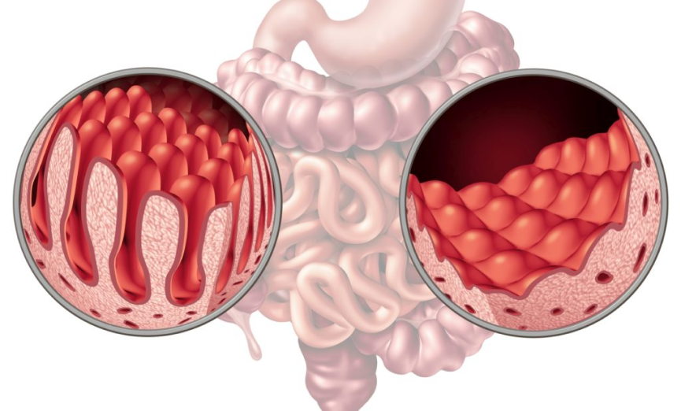
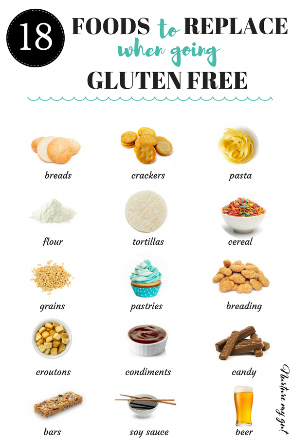

Celiac disease, caused by gluten in wheat, oats and barley, and is one of the most popular allergens experienced
by large number of people, causing infected many symptoms and serious complications that significantly affect
immune and digestive health which causes severe cell atrophy, stress, disruption, sleep problems, poor growth, facial
palate and anemia.
Celiac is an autoimmune condition that involves the immune system reacting to gluten.
Gluten is a general name for a group of proteins in cereals such as wheat, barley, and rye.
In a person with celiac disease, exposure to gluten causes inflammation in the gut. Repeated
exposure gradually damages the small intestine, which can lead to problems absorbing minerals and nutrients from food.
Celiac disease affects around 1 in 100 people worldwide, and many have the condition without knowing it. As many as 2.5
million people in the United States may have undiagnosed celiac disease.
The only way for someone with celiac disease to avoid the symptoms is to keep gluten out of their diet.
What happens in your gut if you have celiac disease ?
The symptoms of celiac disease can range from mild to severe. They can change over time, and they vary from person to person.
Some people have no symptoms or only experience them later in life. A person may not know that they have celiac disease until
they develop a nutrient deficiency or anemia.
Children are more likely to develop digestive symptoms than adults.
These symptoms include:
|
Small intestine |
|
Malnutrition |
|
Vomiting |
|
Villi |
|
Abdominal pain |
|
Nausea |
|
Bloating |
|
Chronic diarrhea or constipation |
|
Gas |
Symptoms of celiac disease that are not digestive can include:
|
Weight loss |
|
Depression or anxiety |
|
Fatigue |
|
Joint pain |
|
Mouth sores |
|
Tingling in the legs and feet |

When a person with celiac disease eats gluten, the immune system, which is supposed to help protect the body
against disease, reacts by hurting the cells lining the small intestine and may also harm other parts of the
body such as the skin, bones or brain (nervous system).
Diet
For most people with celiac disease, switching to a gluten-free diet greatly improves the symptoms,
and a person may notice improvement in days or weeks.
In children, the small intestine usually heals in 3–6 monthsTrusted Source. In adults, full healing can take several years.
Once the intestine heals, the body is able to properly absorb nutrients from food again.
Having a gluten-free diet is easier than ever in some parts of the world, where gluten-free options are becoming more widely available.
The key is to understand which foods and products such as toothpaste tend to contain gluten. A qualified dietitian can help.

What to eat and avoid
Gluten occurs naturally in wheat, rye, and barley. Most cereals, grains, and pasta,
as well as many processed foods, contain gluten. Beers and other grain-based alcoholic drinks can also contain it.
It is crucial to check labeling because gluten can be an ingredient in some unexpected products.
Foods that do not contain gluten include:
- meat and fish
- fruits and vegetables
- some grains, including rice, amaranth, quinoa, and buckwheat rice flour
- cereals such as corn, millet, sorghum, and teff
- pasta, bread, baked goods, and other products labeled “gluten-free”
Should everyone follow a gluten-free diet?
Gluten-free diets have become more popular in recent years. However,
research does not suggest that this diet benefits people who do not have celiac disease or non-celiac gluten sensitivity.
Foods that contain gluten can be important sources of vitamins and minerals, including fiber, iron, and calcium.
Speak with a healthcare provider before eliminating these foods, as doing so can lead to nutrient deficiencies.
____________________________________________________________________________________________